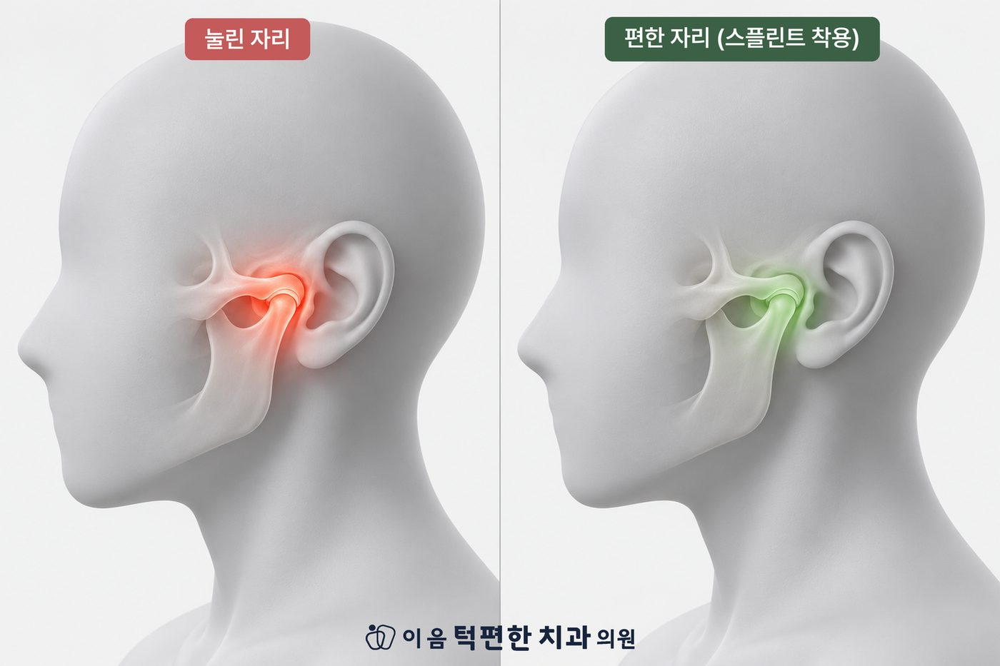

턱관절 치료의 원칙은 비수술·보존적 치료입니다.
치아를 깎거나 움직이지 않는, 되돌릴 수 있는 치료부터 시작합니다.
통증의 원인이 근육인지, 관절인지, 예민해진 신경인지에 따라 치료의 조합이 달라집니다.
치료의 경과와 기간은 사람마다 다릅니다. 진단 결과를 충분히 설명드리고 방향을 함께 정합니다.
| 치료 | 주로 다루는 것 | 이런 경우에 고려합니다 |
|---|---|---|
| 생활습관 교정 | 턱에 쌓이는 부담 | 모든 단계에서 기본으로 함께합니다 |
| 물리치료 · 운동 | 뭉친 근육의 통증 | 근육이 원인인 통증 |
| 약물치료 | 급성기의 통증·염증 | 통증이 심한 시기에 단기간 |
| 스플린트 | 눌린 관절, 수면 중 이갈이 부담 | 치료의 첫 단계로 흔히 씁니다 |
| 프롤로테라피 | 예민해진 통증 신경, 헐거워진 인대 | 오래된 통증, 관절 소리, 자주 빠지는 턱 |
| 보톡스 | 씹는 근육의 지나친 힘 | 근육성 통증·이갈이·교근 비대에 한해 |
| 교합치료 (교정·보철) | 치아의 맞물림 | 턱이 안정된 뒤, 필요한 경우에 한해 |
표의 치료 이름을 누르면 아래 해당 설명으로 이동합니다. 어느 하나만으로 끝나기보다, 원인에 따라 두세 가지를 병행하는 경우가 많습니다.
이 악물기, 턱 괴기, 한쪽으로만 씹기, 질긴 음식처럼 턱관절에 부담을 주는 습관을 찾아 줄입니다. 어떤 치료를 하든 바탕이 되는 단계입니다.
스플린트가 직접 다루지 못하는 근육의 통증을 풀어 주는 치료입니다. 온습포·전기 자극·초음파·레이저로 뭉친 근육과 통증을 가라앉히고, 운동요법으로 턱의 움직임과 자세를 다시 배웁니다.
병원에서 받는 치료와 집에서 반복하는 연습이 합쳐질 때 효과가 오래 유지됩니다. 턱관절 물리치료는 상당 부분 건강보험이 적용되며, 스플린트나 주사 치료와 병행할 수 있습니다.
통증과 염증이 심한 급성기에는 소염진통제, 근이완제 등을 단기간 사용해 증상을 조절합니다. 약물은 통증의 고리를 끊는 보조 수단이며, 원인 치료와 함께 갑니다.
치아 본을 떠서 만드는 단단한 맞춤 장치입니다. 잘못 맞춰진 교합이 아래턱 과두를 밀어 턱관절이 눌리는 것을 풀어 주고, 과두가 올바른 위치에 머물도록 돕습니다. 치아를 깎거나 움직이지 않고, 끼지 않으면 원래대로 돌아가는 되돌릴 수 있는 치료라서 첫 단계로 많이 씁니다.
시중 기성품 마우스피스와는 다릅니다. 치과에서 위아래가 고르게 닿도록 조정하는 과정이 있어야 치료 장치로서 역할을 합니다.
오래 반복된 통증으로 지나치게 예민해진 통증 신경을 가라앉히는 주사 치료입니다. 라이넥(태반 추출물)을 사용하며, 스플린트와 병행하거나 단독으로 보통 2주 간격 3회 시술합니다.
오래된 턱 통증, 관절 소리, 턱이 자주 빠지는 경우에 고려합니다. 2023년 보건복지부가 턱관절 증식치료를 신의료기술로 인정해 치과에서 정식으로 시행하는 치료입니다.
씹는 근육(교근·측두근)의 과도한 긴장을 일시적으로 줄이는 주사입니다. 근육이 원인인 통증, 이갈이·이 악물기, 근육 비대에 한해 검토하며, 관절 자체의 문제에는 쓰지 않습니다.
효과는 보통 3~4개월 지속됩니다. 반복해서 맞으면 씹는 힘이 약해질 수 있어, 증상이 다시 나타났을 때만 최소 3개월 이상 간격을 두고 시행합니다. 통증의 원인이 근육인지 관절인지 가리는 진단이 먼저입니다.
턱관절 치료의 기본은 스플린트 등 되돌릴 수 있는 치료입니다. 턱이 안정된 뒤에도 치아의 맞물림(교합)이 증상에 영향을 준다고 판단되는 경우에 한해 치아교정이나 보철치료를 검토합니다. 모든 턱관절 환자에게 필요한 치료는 아닙니다.
어떤 치료가 맞을지는 진단이 먼저입니다. 상태를 확인하고 치료 방향을 함께 정해 드립니다.
전화 상담 02-6745-2754이 페이지는 일반적인 건강정보이며 개인의 진단이나 치료를 대신하지 않습니다. 증상이 지속되거나 갑자기 악화되면 의료기관에서 진료를 받으시기 바랍니다.